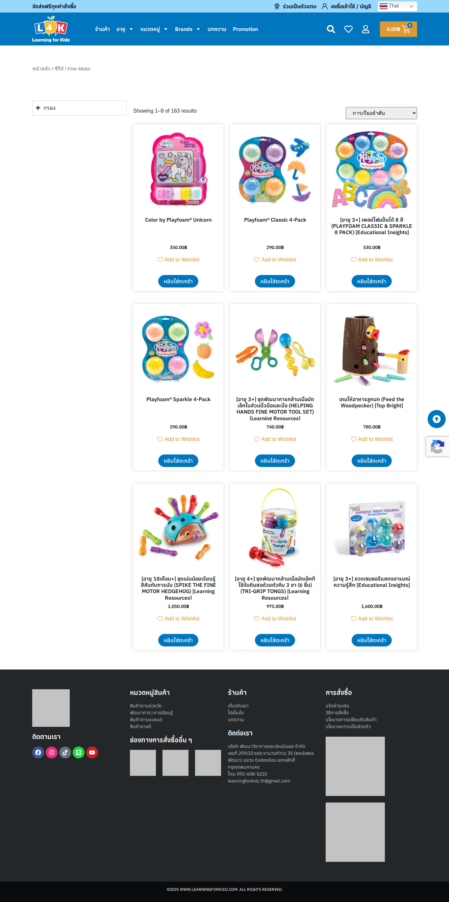
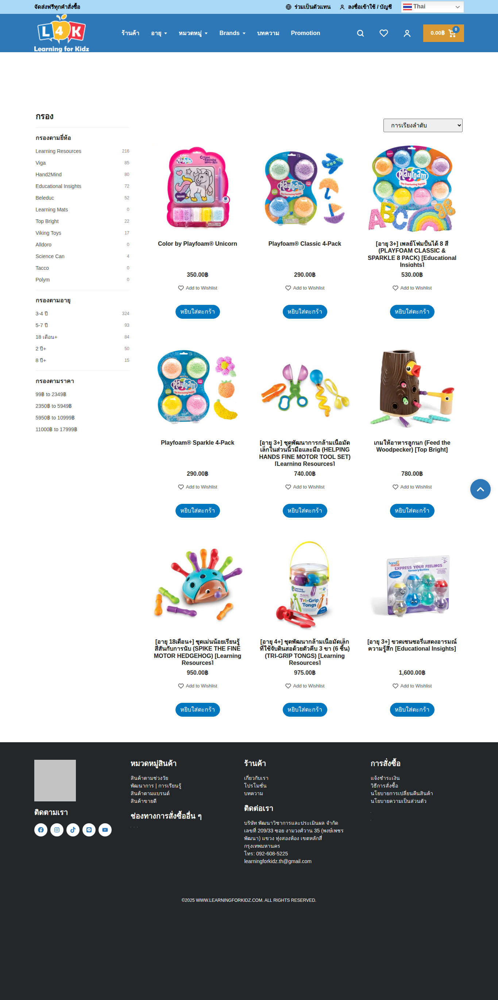
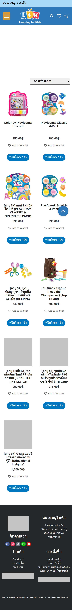
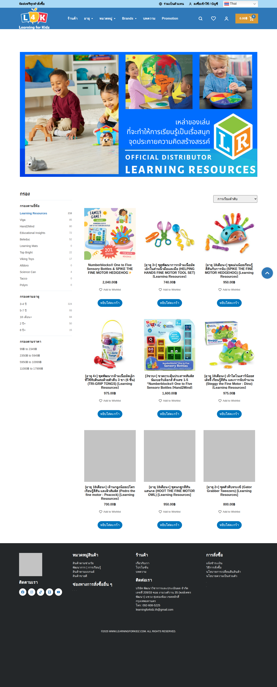
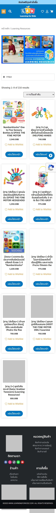
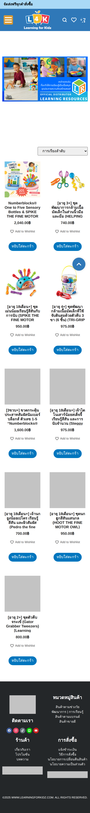
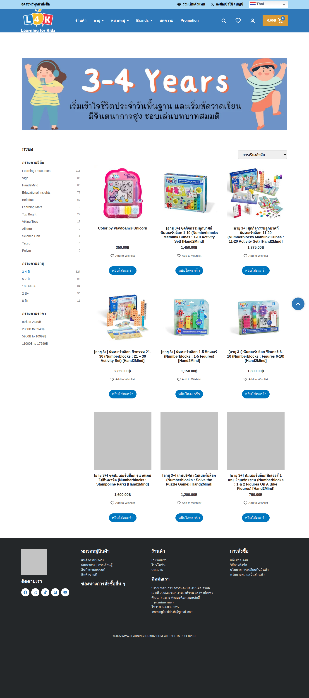
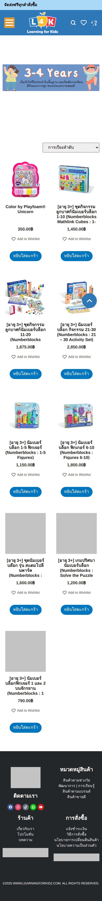

Pure Custom Theme Checkpoint
Product Taxonomy Archives PASS Evidence
ตรวจเทียบหน้า product category, product brand, และ age taxonomy ระหว่าง production Elementor/WooCommerce กับ local custom Tailwind/WooCommerce archive ทั้ง desktop และ mobile. ผลลัพธ์รอบนี้: ผ่านทั้งหมด.
Checklist
PASS Product category + brand + age taxonomy archives: desktop + mobile
- Product category, Learning Resources brand archive, and 3-4 years age archive now pass parity on both desktop and mobile.
- Matched taxonomy hero/banner spacing, product archive grid, ordering select, product card sizing, button count/order, page height, and footer position.
- Kept real WooCommerce taxonomy/product data while normalizing small local title punctuation differences that did not match production.
- Architecture gate passed: zero Elementor/WooLentor dependency styles, scripts, and rendered main-content nodes locally.
Screenshots
Product Category




Product Brand




Age Taxonomy



